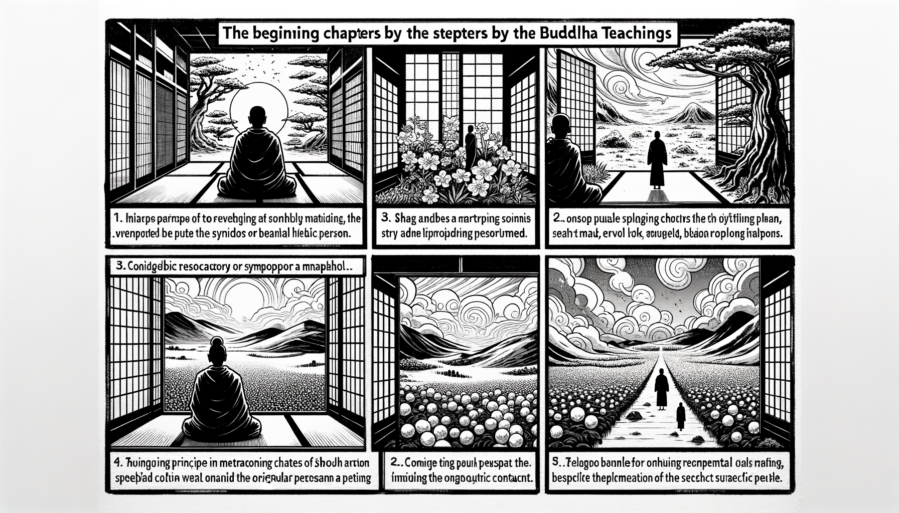

七十五巻 巻一覧
正法眼藏第34 佛教
本ページは tools/gen_web_volumes.py が doc/正法眼蔵.txt から冒頭を抜粋して生成しています。図・詳細解説は今後の手編集で拡張できます。
出典（原文）: https://shomonji.or.jp/zazen/doc/genzou.html
（ローカル生成の全文: 全文ページ）
この巻の位置づけ（学習メモ）
道元『正法眼蔵』七十五巻の第34篇「佛教」です。禅籍・経典への引用や語の行間が重なりやすいので、一度ですべてを要約に還元しない読み方を推奨します。問答 Bot では巻スコープにこの題名を含めると応答が安定しやすいことがあります。
語彙の足場
- 題名語：巻題「佛教」は、道元が本章で特に扱う論点の看板です。辞書義だけに固定せず、本文中の用例で意味を確かめます。
- 引用と典故：公案・経文の引用は、一字一句の照応（何に答えているか）を押さえると全体が見えやすくなります。
- 学び方：冒頭だけでも音読し、分からない箇所は印を付けて後から問うとよいです。
本文（冒頭・自動抜粋）
出典はリポジトリ内 doc/正法眼蔵.txt です。原文の参照元: https://shomonji.or.jp/zazen/doc/genzou.html
諸佛の道現成、これ佛教なり。これ佛祖の佛祖のためにするゆゑに、教の教のために正傳するなり。これ轉法輪なり。この法輪の眼睛裏に、諸佛祖を現成せしめ、諸佛祖を般涅槃せしむ。その諸佛祖、かならず一塵の出現あり、一塵の涅槃あり。盡界の出現あり、盡界の涅槃あり。一須臾の出現あり、多劫海の出現あり。しかあれども、一塵一須臾の出現、さらに不具足の功徳なし。盡界多劫海の出現、さらに補虧闕の經營にあらず。このゆゑに朝に成道して夕に涅槃する諸佛、いまだ功徳かけたりといはず。もし一日は功徳すくなしといはば、人間の八十年ひさしきにあらず。人間の八十年をもて十劫二十劫に比せんとき、一日と八十年とのごとくならん。此佛彼佛の功徳、わきまへがたからん。長劫壽量の所有の功徳と、八十年の功徳とを擧して比量せんとき、疑著するにもおよばざらん。このゆゑに、佛教はすなはち教佛なり、佛祖究盡の功徳なり。諸佛は高廣にして、法教は狹少なるにあらず。まさにしるべし、佛大なるは教大なり、佛小なるは教小なり。このゆゑにしるべし、佛および教は、大小の量にあらず、善惡無記等の性にあらず、自教教他のためにあらず。
ある漢いはく、釋迦老漢、かつて一代の教典を宣説するほかに、さらに上乘一心の法を摩訶迦葉に正傳す、嫡嫡相承しきたれり。しかあれば、教は赴機の戲論なり、心は理性の眞實なり。この正傳せる一心を、教外別傳といふ。三乘十二分教の所談にひとしかるべきにあらず。一心上乘なるゆゑに、直指人心、見性成佛なりといふ。
この道取、いまだ佛法の家業にあらず。出身の活路なし、通身の威儀あらず。かくのごとくの漢、たとひ數百千年のさきに先達と稱ずとも、恁麼の説話あらば、佛法佛道はあきらめず、通ぜざりけるとしるべし。ゆゑはいかん、佛をしらず、教をしらず、心をしらず、内をしらず、外をしらざるがゆゑに。そのしらざる道理は、かつて佛法をきかざるによりてなり。いま諸佛といふ本末、いかなるとしらず。去來の邊際すべて學せざるは、佛弟子と稱ずるにたらず。ただ一心を正傳して、佛教を正傳せずといふは、佛法をしらざるなり。佛教の一心をしらず、一心の佛教をきかず。一心のほかに佛教ありといふ、なんぢが一心、いまだ一心ならず。佛教のほかに一心ありといふ、なんぢが佛教いまだ佛教ならざらん。たとひ教外別傳の謬説を相傳すといふとも、なんぢいまだ内外をしらざれば、言理の符合あらざるなり。
佛正法眼藏を單傳する佛祖、いかでか佛教を單傳せざらん。いはんや釋迦老漢、なにとしてか佛家の家業にあるべからざらん教法を施設することあらん。釋迦老漢すでに單傳の教法をあらしめん、いづれの佛祖かなからしめん。このゆゑに、上乘一心といふは、三乘十二分教これなり、大藏小藏これなり。
しるべし、佛心といふは、佛の眼睛なり、破木杓なり、諸法なり、三界なるがゆゑに、山海國土、日月星辰なり。佛教といふは、萬像森羅なり。外といふは、這裏なり、這裏來なり。正傳は、自己より自己に正傳するがゆゑに、正傳のなかに自己あるなり。一心より一心に正傳するなり、正傳に一心あるべし。上乘一心は、土石砂礫なり、土石砂礫は一心なるがゆゑに、土石砂礫は土石砂礫なり。もし上乘一心の正傳といはば、かくのごとくあるべし。
しかあれども、教外別傳を道取する漢、いまだこの意旨をしらず。かるがゆゑに、教外別傳の謬説を信じて、佛教をあやまることなかれ。もしなんぢがいふがごとくならば、教をば心外別傳といふべきか。もし心外別傳といはば、一句半偈つたはるべからざるなり。もし心外別傳といはずは、教外別傳といふべからざるなり。
摩訶迦葉すでに釋尊の嫡子として法藏の教主たり。正法眼藏を正傳して佛道の住持なり。しかありとも、佛教は正傳すべからずといふは、學道の偏局なるべし。しるべし、一句を正傳すれば、一法の正傳せらるるなり。一句を正傳すれば、山傳水傳あり。不能離却這裡（這裏を離却すること能はず）なり。
釋尊の正法眼藏無上菩提は、ただ摩訶迦葉に正傳せしなり。餘子に正傳せず、正傳はかならず摩訶迦葉なり。このゆゑに、古今に佛法の眞實を學する箇箇、ともにみな從來の教學を決擇するには、かならず佛祖に參究するなり。決を餘輩にとぶらはず。もし佛祖の正決をえざるは、いまだ正決にあらず。依教の正不を決せんとおもはんは、佛祖に決すべきなり。そのゆゑは、盡法輪の本主は佛祖なるがゆゑに。道有道無、道空道色（有と道ひ無と道ひ、空と道ひ色と道ふ）、ただ佛祖のみこれをあきらめ、正傳しきたりて、古佛今佛なり。
巴陵因僧問、祖意教意、是同是別（是れ同か是れ別か）。
師云、鷄寒上樹、鴨寒入水（鷄寒うして樹に上り、鴨寒うして水に入る）。
この道取を參學して、佛道の祖宗を相見し、佛道の教法を見聞すべきなり。いま祖意教意と問取するは、祖意は祖意と是同是別と問取するなり。いま鷄寒上樹、鴨寒入水といふは、同別を道取すといへども、同別を見取するともがらの見聞に一任する同別にあらざるべし。しかあればすなはち、同別の論にあらざるがゆゑに、同別と道取しつべきなり。このゆゑに、同別と問取すべからずといふがごとし。
玄沙因僧問、三乘十二分教卽不要、如何是祖師西來意（三乘十二分教は卽ち不要なり、如何ならんか是れ祖師西來意）。
師云、三乘十二分教總不要（三乘十二分教總に不要なり）。
いはゆる僧問の三乘十二分教卽不要、如何是祖師西來意といふ、よのつねにおもふがごとく、三乘十二分教は條條の岐路なり。そのほか祖師西來意あるべしと問するなり。三乘十二分教これ祖師西來意なりと認ずるにあらず。いはんや八萬四千法門蘊すなはち祖師西來意としらんや。しばらく參究すべし、三乘十二分教、なにとしてか卽不要なる。もし要せんときは、いかなる規矩かある。三乘十二分教を不要なるところに、祖師西來意の參學を現成するか。いたづらにこの問の出現するにあらざらん。
玄沙いはく、三乘十二分教總不要。
この道取は、法輪なり。この法輪の轉ずるところ、佛教の佛教に處在することを參究すべきなり。その宗旨は、三乘十二分教は佛祖の法輪なり、有佛祖の時處にも轉ず、無佛祖の時處にも轉ず。祖前祖後、おなじく轉ずるなり。さらに佛祖を轉ずる功徳あり。祖師西來意の正當恁麼時は、この法輪を總不要なり。總不要といふは、もちゐざるにあらず、やぶるるにあらず。この法輪、このとき、總不要輪の轉ずるのみなり。三乘十二分教なしといはず、總不要の時節を覰見すべきなり。總不要なるがゆゑに三乘十二分教なり。三乘十二分教なるがゆゑに三乘十二分教にあらず。このゆゑに、三乘十二分教、總不要と道取するなり。その三乘十二分教、そこばくあるなかの一隅をあぐるには、すなはちこれあり。
三乘
一者聲聞乘
四諦によりて得道す。四諦といふは、苦諦、集諦、滅諦、道諦なり。これをきき、これを修行するに、生老病死を度脱し、般涅槃を究竟す。この四諦を修行するに、苦集は俗なり、滅道は第一義なりといふは、論師の見解なり。もし佛法によりて修行するがごときは、四諦ともに唯佛與佛なり。四諦ともに法住法位なり。四諦ともに實相なり、四諦ともに佛性なり。このゆゑに、さらに無性無作等の論におよばず、四諦ともに總不要なるゆゑに。
二者緣覺乘
十二因緣によりて般涅槃す。十二因緣といふは、一者無明、二者行、三者識、四者名色、五者六入、六者觸、七者受、八者愛、九者取、十者有、十一者生、十二者老死。
この十二因緣を修行するに、過去現在未來に因緣せしめて、能觀所觀を論ずといへども、一一の因緣を擧して參究するに、すなはち總不要輪轉なり、總不要因緣なり。しるべし、無明これ一心なれば、行識等も一心なり。無明これ滅なれば、行識等も滅なり。無明これ涅槃なれば、行識等も涅槃なり。生も滅なるがゆゑに、恁麼いふなり。無明も道著の一句なり、識名色等もまたかくのごとし。しるべし、無明行等は、吾有箇斧子、與汝住山（吾れに箇の斧子有り、汝と與に住山せん）なり。無明行識等は、發時蒙和尚許斧子、便請取（發時和尚に斧子を許すことを蒙れり、便ち請取せん）なり。
三者菩薩乘
六波羅蜜の教行證によりて、阿耨多羅三藐三菩提を成就す。その成就といふは、造作にあらず、無作にあらず、始起にあらず、新成にあらず、久成にあらず、本行にあらず、無爲にあらず。ただ成就阿耨多羅三藐三菩提なり。
六波羅蜜といふは、檀波羅蜜、尸羅波羅蜜、羼提波羅蜜、毘梨耶波羅蜜、禪那波羅蜜、般若波羅蜜なり。これはともに無上菩提なり。無生無作の論にあらず。かならずしも檀をはじめとし般若ををはりとせず。
經云、利根菩薩、般若爲初、檀爲終。鈍根菩薩、檀爲初、般若爲終（利根の菩薩は、般若を初めとし、檀を終りとす。鈍根の菩薩は、檀を初めとし、般若を終りとす）。
しかあれども、羼提もはじめなるべし、禪那もはじめなるべし。三十六波羅蜜の現成あるべし。籮籠より籮籠をうるなり。
波羅蜜といふは、彼岸到なり。彼岸は古來の相貌蹤跡にあらざれども、到は現成するなり、到は公案なり。修行の彼岸へいたるべしともおふことなかれ。彼岸に修行あるがゆゑに、修行すれば彼岸到なり。この修行、かならず徧界現成の力量を具足せるがゆゑに。
十二分教
一者素咀纜 此云契經
二者祇夜 此云重頌
三者和伽羅那 此云授記
四者伽陀 此云諷誦
五者憂陀那 此云無問自説
六者尼陀那 此云因緣
七者波陀那 此云譬喩
八者伊帝目多伽 此云本事
九者闍陀伽 此云本生
十者毘佛略 此云方廣
十一者阿浮陀達磨 此云未曾有
十二者優婆提舍 此云論議
如來則爲直説陰界入等假實之法、是名修多羅。
或四五六七八九言偈、重頌世界陰入等事、是名祇夜。
或直記衆生未來事、乃至記鴿雀成佛等、是名和伽羅那。
或孤起偈、記世界陰入等事、是名伽陀。
或無人問、自説世界事、是名優陀那。
或約世界不善事、而結禁戒、是名尼陀那。
或以譬喩説世界事、是名阿波陀那。
或説本昔世界事、是名伊帝目多伽。
或説本昔受生事、是名闍陀伽。
或説世界廣大事、是名毘佛略。
或説世界未曾有事、是名阿浮達摩。
或問難世界事、是名優婆提舍。
此是世界悉檀、爲悅衆生故、起十二部經。
（如來卽ち爲に直に陰界入等の假實の法を説きたまふ、是れを修多羅と名づく。
或いは四、五、六、七、八、九言の偈をもて、重ねて世界陰入等の事を頌す、是れを祇夜と名づく。
或いは直に衆生未來の事を記し、乃至鴿雀の成佛等を記す、是れを和伽羅那と名づく。
或いは孤起偈をもて、世界陰入等の事を記す、是れを伽陀と名づく。
或いは人問ふこと無く、自ら世界の事を説く、是れを優陀那と名づく。
或いは世界不善の事に約して、禁戒を結す、是れを尼陀那と名づく。
或いは譬喩を以て、世界の事を説く、是れを阿波陀那と名づく。
或いは本昔世界の事を説く、是れを伊帝目多伽と名づく。
或いは本昔受生の事を説く、是れを闍陀伽と名づく。
或いは世界廣大の事を説く、是れを毘佛略と名づく。
或いは世界の未曾有の事を説く、是れを阿浮陀達磨と名づく。
或いは世界の事を問難す、是れを優婆提舍と名づく。
此れは是れ世界悉檀なり、衆生を悅ばしめんが爲の故に、十二部經を起す。）
十二部經の名、きくことまれなり。佛法のよのなかにひろまれるときこれをきく、佛法すでに滅するときはきかず。佛法いまだひろまらざるとき、またきかず。ひさしく善根をうゑて佛をみたてまつるべきもの、これをきく。すでにきくものは、ひさしからずして阿耨多羅三藐三菩提をうべきなり。
この十二、おのおの經と稱ず。十二分教ともいひ、十二部經ともいふなり。十二分教おのおの十二分教を具足せるゆゑに、一百四十四分教なり。十二分教おのおの十二分教を兼含せるゆゑに、ただ一分教なり。しかあれども、億前億後の數量にあらず。これみな佛祖の眼睛なり、佛祖の骨髓なり、佛祖の家業なり、佛祖の光明なり、佛祖の莊嚴なり、佛祖の國土なり。十二分教をみるは佛祖をみるなり、佛祖を道取するは十二分教を道取するなり。
しかあればすなはち、靑原の垂一足、すなはち三乘十二分教なり。南嶽の説似一物卽不中、すなはち三乘十二分教なり。いま玄沙の道取する總不要の意趣、それかくのごとし。この宗旨擧拈するときは、ただ佛祖のみなり。さらに半人なし、一物なし、一事未起なり。正當恁麼時、如何。いふべし總不要。
あるいは九部といふあり。九分教といふべきなり。
九部
図解（4コマ・AI生成）
教義の根拠は本文・出典に従い、漫画は比喩の補助に留めてください。

深掘り（読解のコツ）
- 道元文は定義の羅列に見えても、多くの場合誤解への遮断と正伝の姿勢が背骨になっています。
- 「当体」「現成」「即」などの語が出たら、その巻独自の差別相にどう接続しているかをメモしておくとよいです。